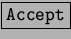
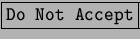

Una de las principales actividades en Internet es la navegación. El programa más usado es Netscape. Este no es software libre, por lo tanto algunas distribuciones no lo traen instalado, como por ejemplo Debian. De todas formas esta disponible para bajar desde http://www.netscape.com.
En la distribución Red Hat, en KDE la ubicación del Netscape es K-Red Hat-Internet-Netscape Communicator, si bien en cada distribución cambian los menúes, una forma segura de encontrarlo es tipeando en una terminal netscape.
La primera vez que se ejecuta netscape (fig. 6.6 ) aparecerá una ventana con la licencia y los botones  y . Aclaramos que no es sotfware libre, no tiene la licencia GNU que viene con la mayoría del software en Linux.
Otra aplicación que sirve para navegar en páginas no muy complejas es el kfm, que no se lo conoce por ese nombre sino más bien por Navegador(fig. 6.7). Cada vez que uno navega entre las carpetas locales utiliza ese programa. Como por ejemplo cuando se clickea en la opción de menu Directorio Personal. Y aparecerá una ubicación similar a file:/home/usuario. Si se reemplaza por http:// se podrá navegar por la web.
Esta en desarrollo y pretende llegar a reemplazar al software comercial.
Otra alternativa es la navegación en texto, si bien a muchos no les parecerá atractiva, es una experiencia distinta. Un programa bastante elaborado es el lynx(figura 6.8). Abriendo una terminal y tipeando lynx http://www.lynx.org podremos acceder a la página de los creadores. Al no mostrar gráficos es mucho más rápido que otros navegadores. Y sin lugar a dudas ocupa mucho menos espacio.